UI/UX design concept
iOS App
School
Mobile service for remote learning
and development of good habits
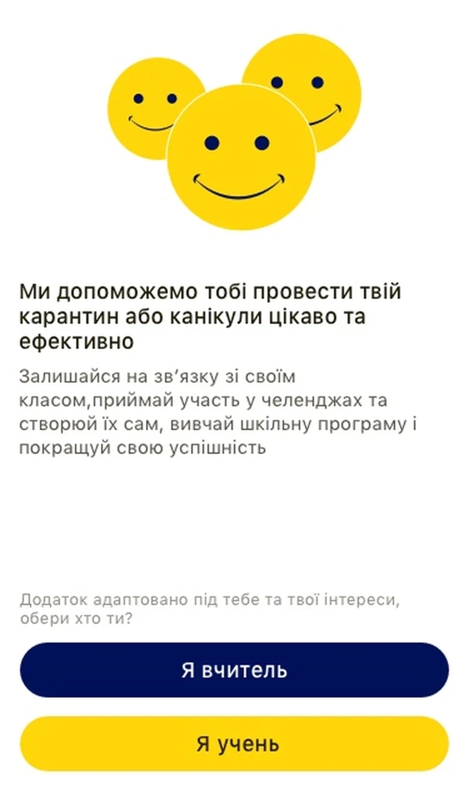
About
School is an iOS app concept for remote learning. Pupils and teachers share one space: lessons and homework come from the teacher, and challenges, small goals that run for a set time, can come from anyone in the class.
Problem
Wars and pandemics took away children's chance to learn in an interesting way. During the quarantine, lessons moved to Viber and Zoom, and young pupils quickly lost interest.
Goal
Make distance learning interesting.
Solution
An app that works like a social network. Pupils create challenges that last for a while and help them build good habits; teachers control the content and organise the learning.
In use
Pupils and teachers, at home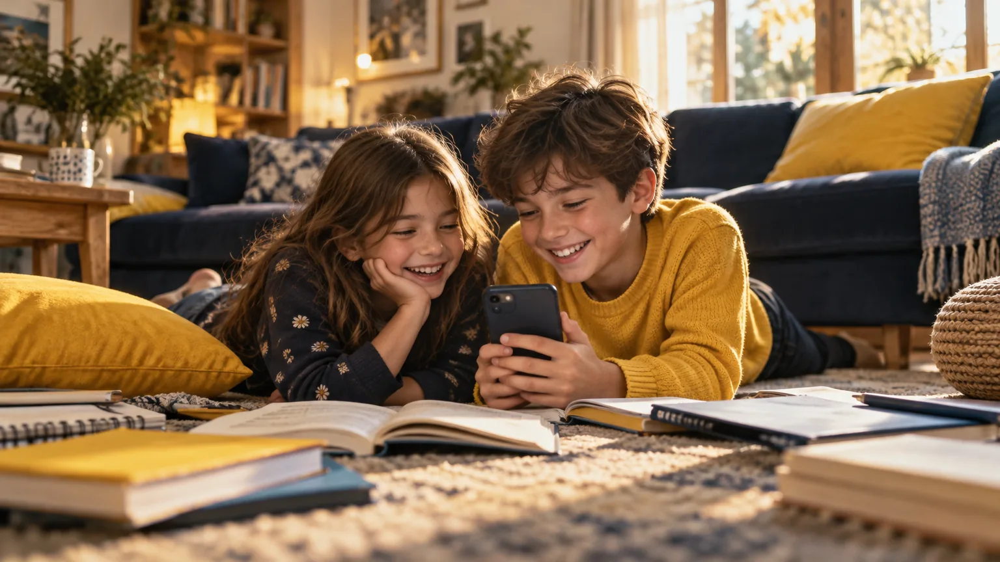
Challenges, not another video call
Pupils open a feed of challenges from classmates and teachers, sorted by sport, travel, creativity and study. Each one runs for a set time, like “English every day”, and turns a small task into a habit.
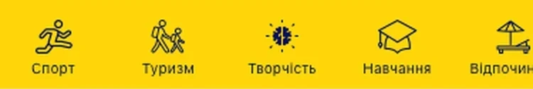
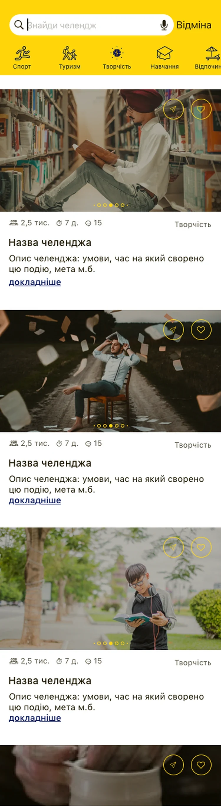
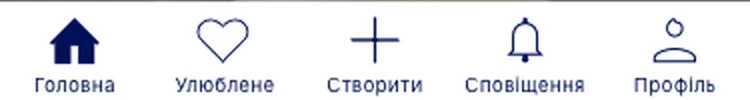
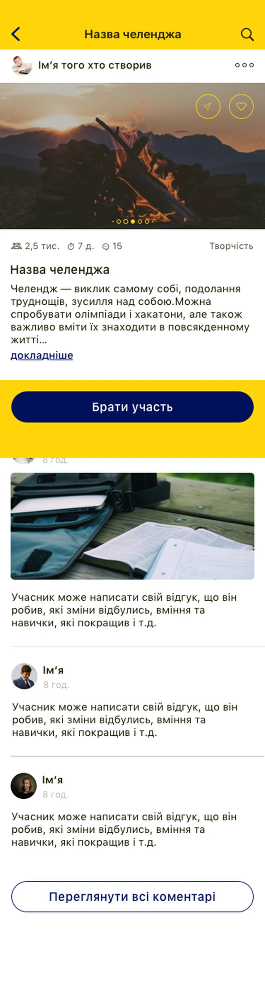
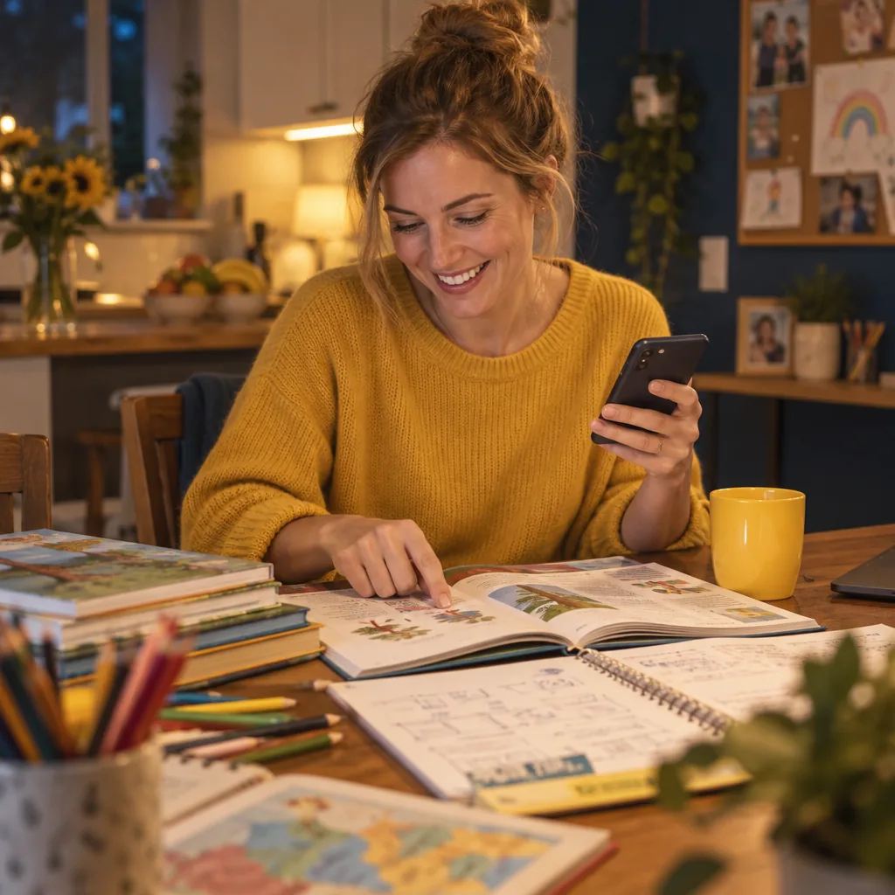
A lesson in three steps
The teacher picks a date, adds photos, video and files, and publishes. The class was chosen at sign-up, so the lesson reaches the right pupils, and the homework sits right under it.
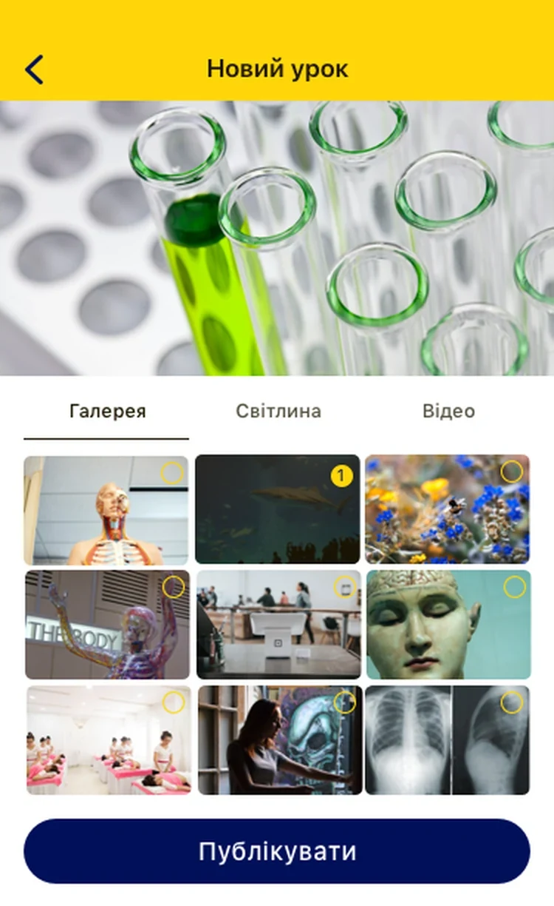
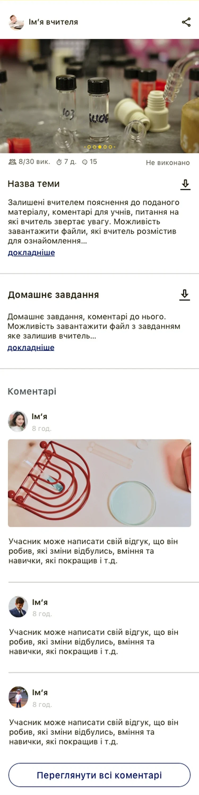
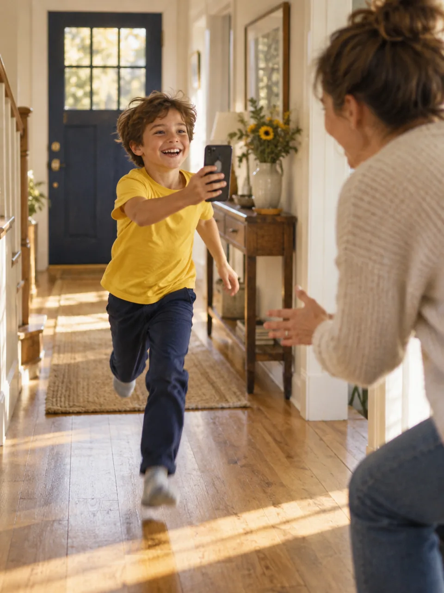
Homework that answers back
Pupils send homework with a comment and files. A notification tells them when the teacher has commented on it or graded it, so nobody waits for a parent to forward a message.
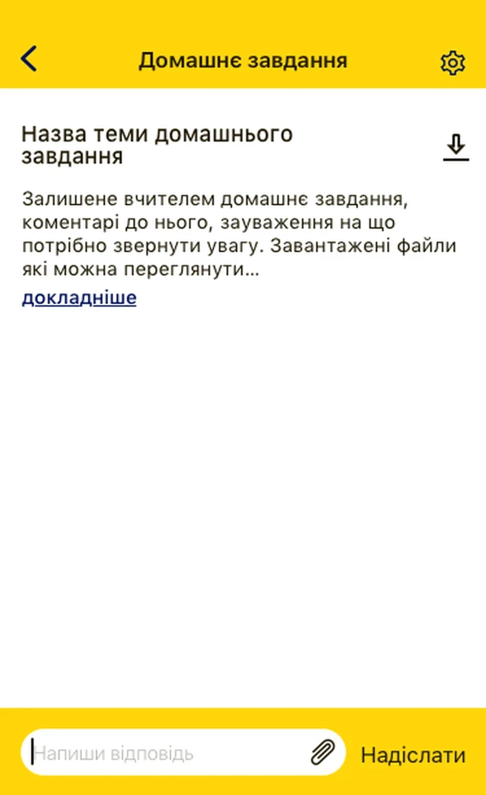
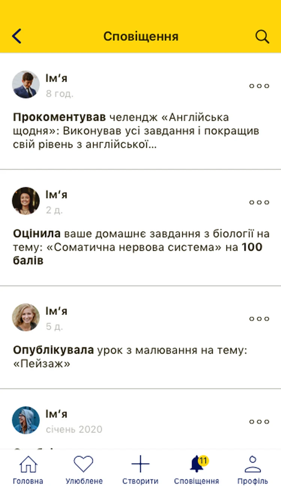
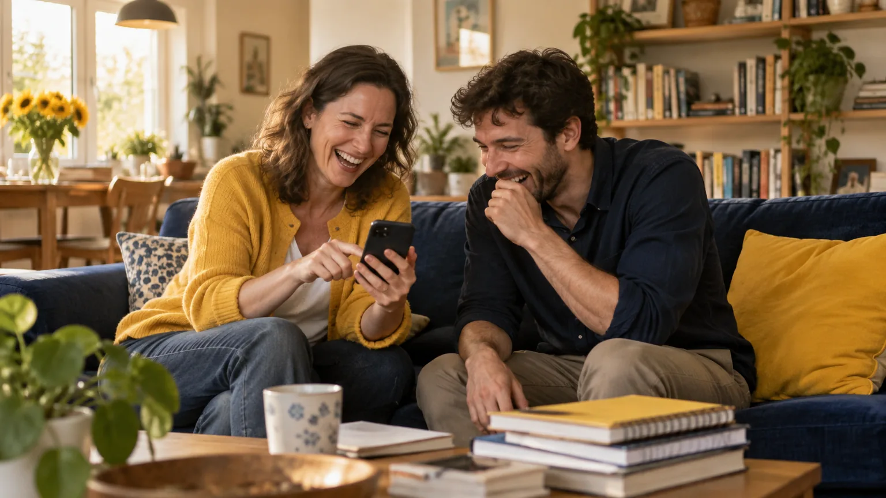
Challenges with moderation
Teachers start challenges for their class, for other teachers or for everyone. Challenges created by pupils wait for the teacher, who allows or declines them.
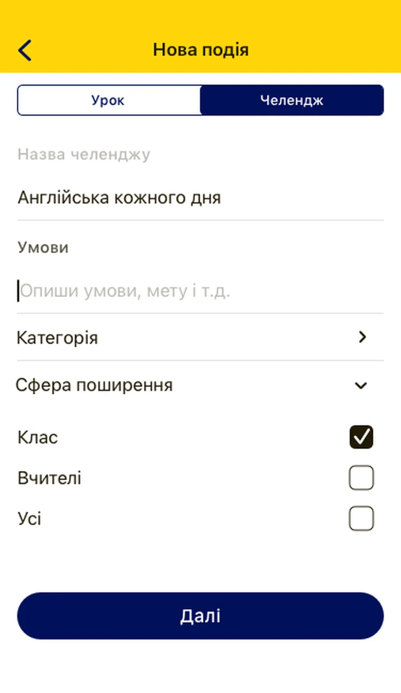
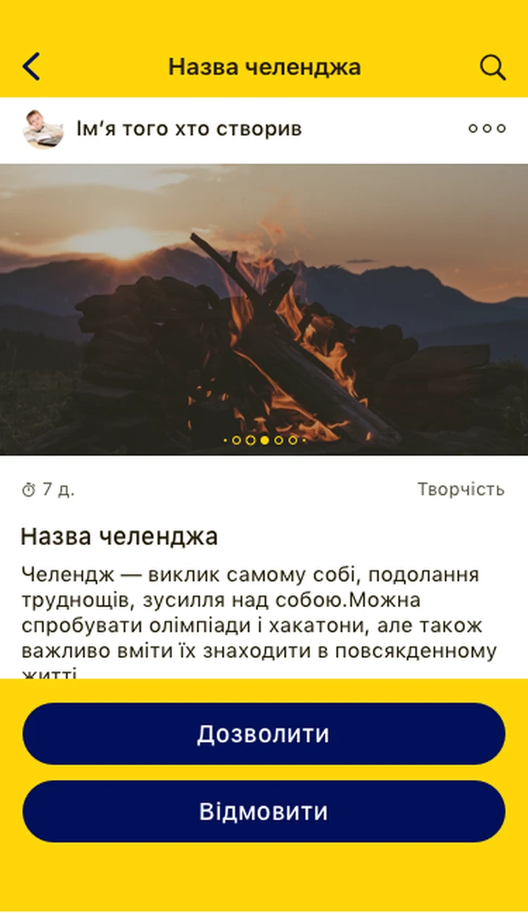
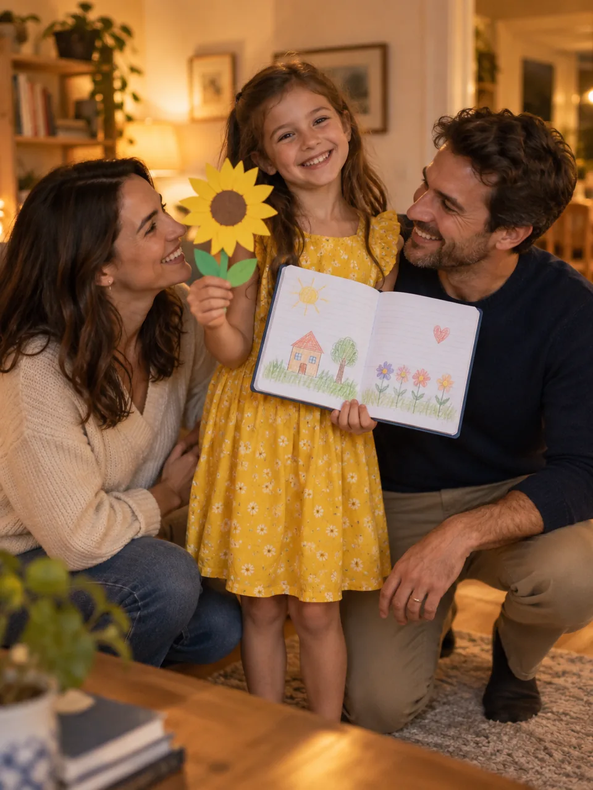
Progress you can see
Every homework has a status: done, being checked or not done. The teacher grades it out of 100, and the pupil sees the result in the profile.
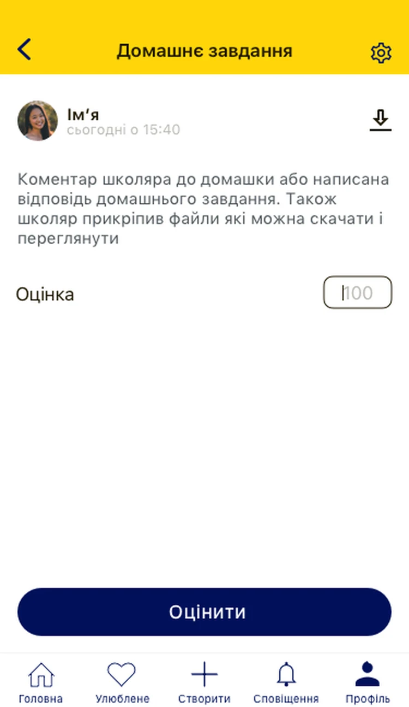
Context
Learning at home, in war and epidemics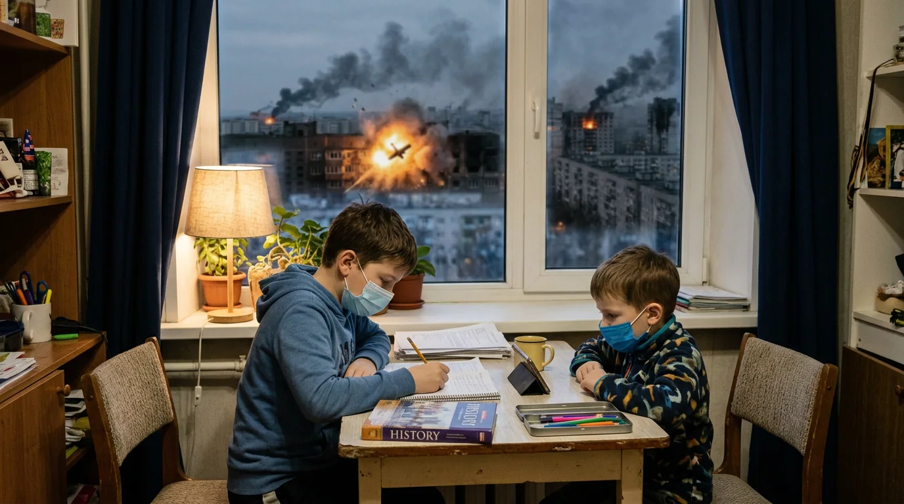
When school stays at home
Wars and epidemics close schools. During the pandemic, and then the war, children in Ukraine learned from home for months at a time: in masks, at the kitchen table, often in a city where sirens and explosions were part of the day.
Their parents still went to work, so children studied alone, with a phone and a pile of textbooks. Classmates turned into names in a group chat, and lessons into files to download. Without a teacher in the room, it was easy to lose interest and fall behind.
School is built for that moment: lessons, homework and challenges in one place, a teacher who sees every answer, and classmates close by, even when the classroom is not.
Customer journey map
Teacher and pupil, four stagesThanks to the customer journey map, I found critical things I had missed, and it helped me fix the mistakes at the first stage.
| Teacher | Attraction | Activation | Involvement | Retention |
|---|---|---|---|---|
| Goal | Find an interesting tool for teaching remotely | Create lessons | Grade homework and make something interesting for the children | Create challenges between teachers |
| Thoughts and feelings | Had to register right after installing, did not like it | Not clear how the children would find the lessons | Liked watching the children's activity in a challenge, but not clear who can take part | Children create many events, and some are not safe |
| Problems | People want to look around before signing up | No way to see lessons and tasks for one class | A challenge has no defined audience | No control |
| Solution | Let people browse first and ask them to sign up only when they act | Choose the school and class at sign-up | Choose a category and an audience when creating a challenge | More filters when creating, and moderation |
| Pupil | Attraction | Activation | Involvement | Retention |
|---|---|---|---|---|
| Goal | Distance learning is boring; spend the time in an interesting way | Create a challenge or join one | Finish the challenge and send the homework | Create more challenges |
| Thoughts and feelings | Had to register right after installing, did not like it | Made a mistake while creating and could not edit it | Fun to take part, but how do I know the teacher has seen my homework? | Cannot create more than one challenge a month |
| Problems | People want to look around before signing up | A challenge cannot be edited | The teacher cannot grade | Limited options |
| Solution | Let people browse first and ask them to sign up only when they act | Allow editing | The teacher gives homework a status and a grade | More options for a fee |